Tamano
Tamano · Okayama
Tamano
Highlighted on the Okayama map.
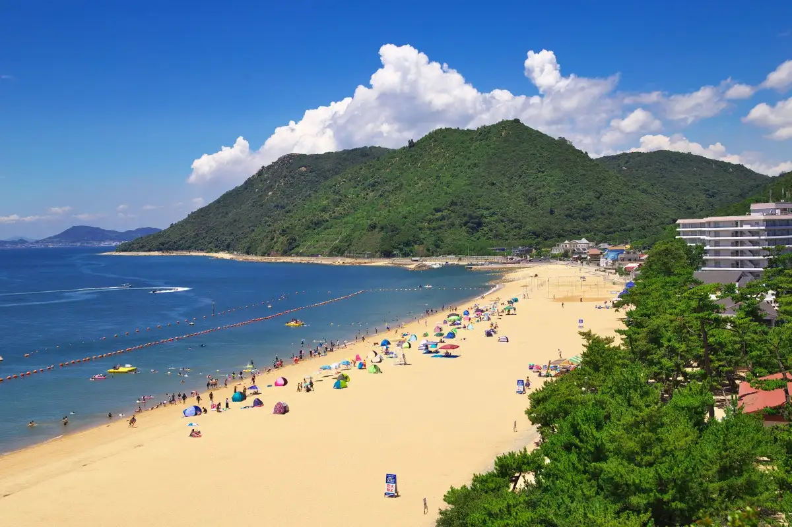
Stay
UNO HOTEL
Harbor-front hotel in Uno (Chikko) with guest rooms documented on the official site and Okayama tourism pages.
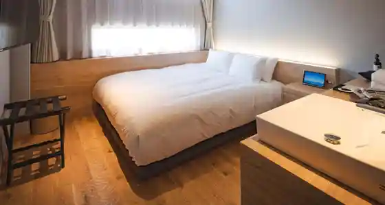
KEIRIN HOTEL 10
Hotel beside Tamano Keirin Stadium in Uno, with suite and twin rooms shown on the official room pages.
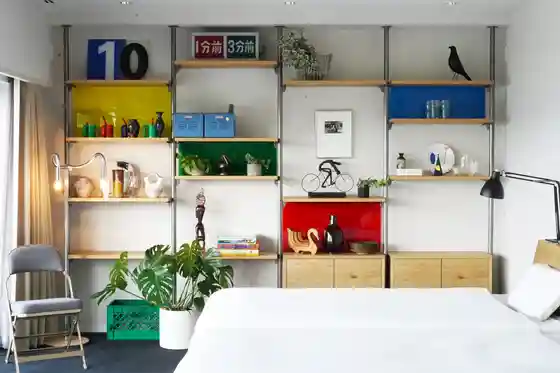
GUESTHOUSE Kikusui Ryokan
Guesthouse (Kikusui Ryokan) in Uno Chikko; guest-room photos are published on the official site.
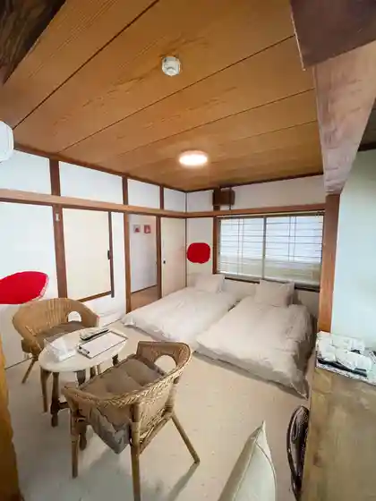
Daiyamondo Setochi Marin Hotel
Seaside hotel at Shibukawa Beach; Okayama tourism and the official site document western-style guest rooms.
Hana San Ryokan
Ryokan in Uno Chikko listed by Okayama tourism with a confirmed guest-room photo.
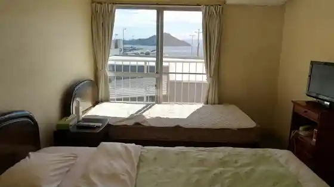
SETONITE
Villa-style tent lodging in Tai, Tamano; Okayama tourism shows an interior sleeping space photo.
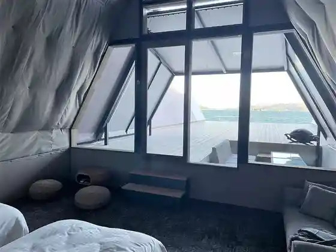
Tentomi (Shibukawa Kaigan Guranpingu / SHIBUKAWA SEA PICNIC)
Glamping tents at Shibukawa Beach; Okayama tourism documents an in-tent bed photo.
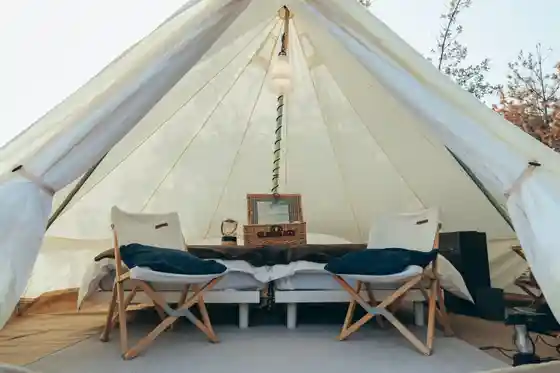
The Nature Uno
Whole-house rental stay in Tama, Tamano, with a bedroom photo on Okayama tourism.
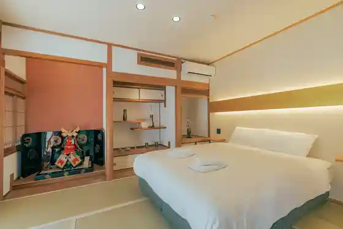
Tama no Yu Campground
Campground next to Setouchi Onsen Tamano-yu; Okayama tourism shows a bell-tent sleeping space.
Dining
Umi no Eki Shiisaidomato
Uno waterfront market selling fresh fish and seafood bowls, listed on Okayama tourism gourmet pages.
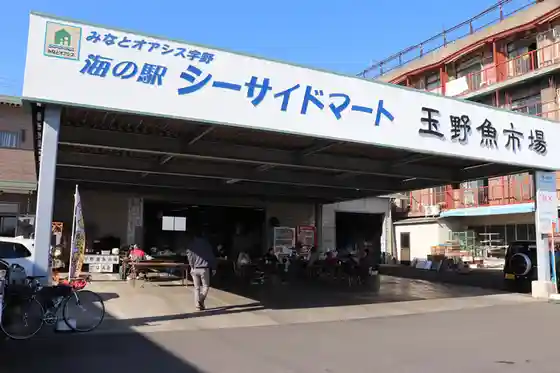
Sushi Kappo Ikeda Ya Main Shop
Sushi and kappo restaurant in Uno Chikko since 1948, with a second shop in Uno; official site documents the Chikko honten exterior.
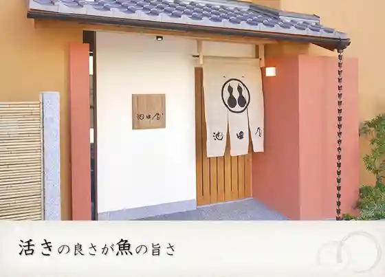
Onsen
Setochi Onsen Tama Baths
Day-use hot-spring baths in Uno; the official site documents open-air baths including Tanada-no-yu.
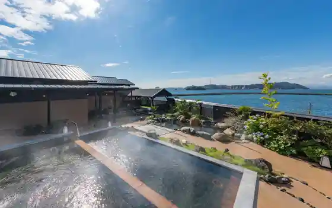
Tama no Onsen (Daiyamondo Setochi Marin Hotel Nai)
Hot-spring baths inside Diamond Setouchi Marine Hotel at Shibukawa, open to hotel guests and day visitors.
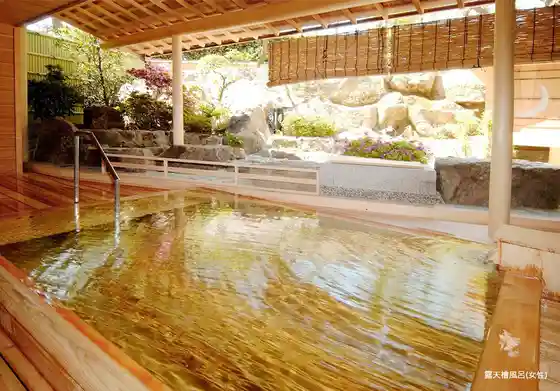
Experience
Omocha Okoku
Indoor/outdoor amusement park in Taki, Tamano, listed on Okayama tourism with a facility photo.
Shibukawa Dobutsu Park
Petting zoo at Shibukawa where feeding, walks, and horse riding are described on Okayama tourism.
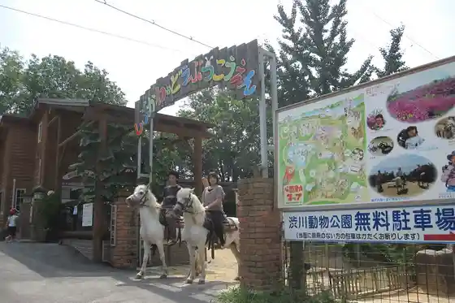
Bizen Yaki Oji Kama
Bizen-ware kiln in Nagai offering reserved pottery experiences, per Okayama tourism.
Setochi Farm
Farm in Yamada offering strawberry and tomato picking, per Okayama tourism.
Setochi Yottochata
Yacht charter experience based in Uno, listed on Okayama tourism.
Atorentasaikuru
Art-themed rental bikes at JR Uno Station, listed on Okayama tourism.
Eki Higashi So Ko
Workshop/gallery space in Chikko for craft visits, listed on Okayama tourism.
Shibukawa Uota Park
Water park facilities at Shibukawa, listed on Okayama tourism.
Tama no Kanko Boranteiagaido no Kai
Volunteer guide group based at the Tamano tourism association building in Uno.
Setochi Nachurarufiirudo
Auto-camping field in Taki with tent sites shown on Okayama tourism (not a hotel room listing).
Sights
Shibukawa Beach (Shibukawa Coast)
White-sand swimming beach at Shibukawa with Ojigatake behind it; Okayama tourism hero photo of the shore.
Ojigagaku
Coastal rocky viewpoint spanning Tamano and Kurashiki, documented on Okayama tourism.
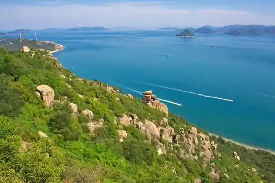
Shibukawa Marin Aquarium (Tamano Rikkai Hiroshi Museum)
Tamano City marine museum and aquarium at Shibukawa, listed on Okayama tourism.
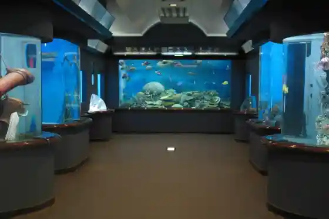
Roadside Station Miyama Park
Roadside station at Miyama Park in Tai, listed on Okayama tourism.
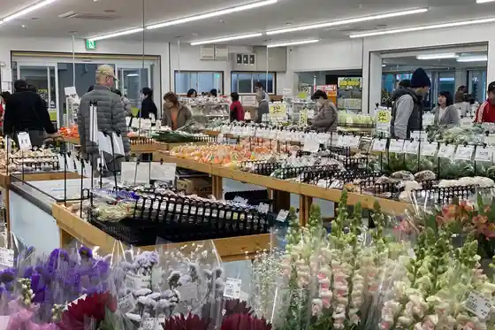
Miyama Park
Miyama Park green space in Tai, listed on Okayama tourism (same park complex as the English garden).
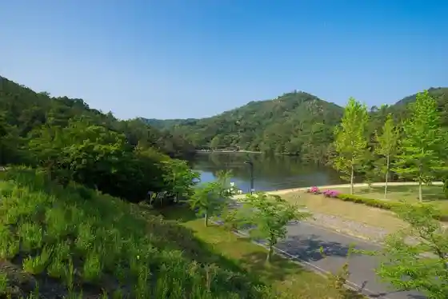
Miyama Igirisu Garden
English-style garden inside Miyama Park, listed on Okayama tourism.
Uno Minato Shuhen Atosaito
Outdoor art installations around Uno Port, listed on Okayama tourism.
Uno no Chinu / Uno Kochinu
Large black sea bream (“Chinu”) art object at Uno Port, listed on Okayama tourism.
Jozan Castle Ruins
Castle ruin site on Mt. Tsuneyama, listed on Okayama tourism.
Shibukawa Park
Park at Shibukawa known for wisteria trellises, listed on Okayama tourism.
Nichi no Shutsu Coast
Sunrise coastline park area in Chikko, listed on Okayama tourism.
Ishijima
Island south of Tamano (north side in Tamano City, south toward Naoshima), listed on Okayama tourism.
Tamano Keirinjo
Keirin (bicycle racing) stadium in Uno Chikko, listed on Okayama tourism.
Tama Hime Shrine
Shrine in Tama, Tamano, listed on Okayama tourism.
Tamano Tourist Information
Tourist information counter inside JR Uno Station, listed on Okayama tourism.
Tai Minato Park
Waterfront park in Tai harbor, listed on Okayama tourism.
Yotaro Shrine
Shrine in Yahama-cho Osaki, Tamano, listed on Okayama tourism.
Suzuri I Tenmangu Shrine
Tenman-gū shrine in Yahama-cho Osaki, Tamano, listed on Okayama tourism.
Tamano Supotsu Center
Public sports center in Tai beside Miyama Park, listed on Okayama tourism.
Miyama Igirisu Teien Boranteia no Kai
Volunteer group supporting Miyama English Garden in Tai, listed on Okayama tourism.